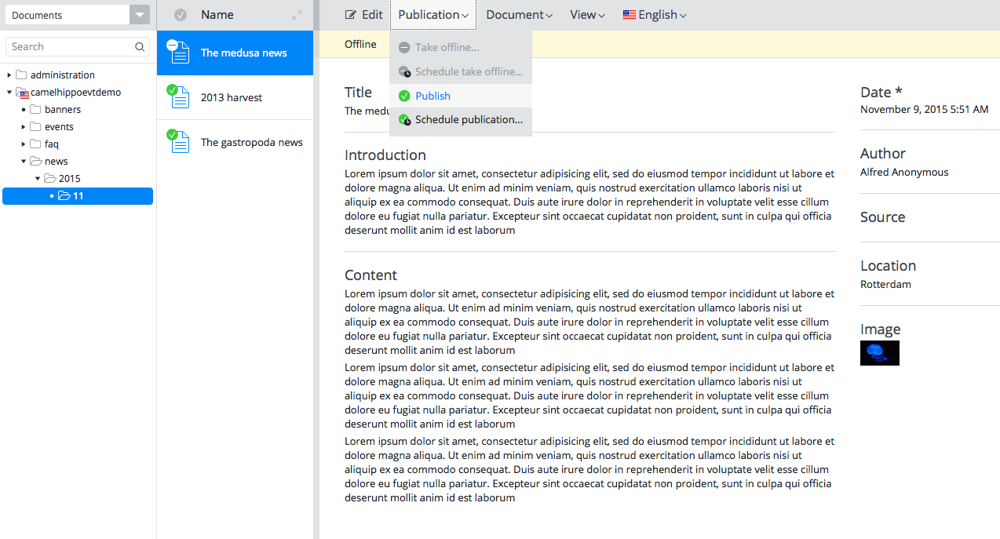

Bloomreach Camel Event Bus Support

Demo 1: Solr Search Engine Integration
Overview
| Route name | Description |
|---|---|
| Route-HippoEventBus-to-File | Receives an HippoEventBus event and store it into a file under the inbox folder. |

| Route name | Description |
|---|---|
| Route-File-to-Rest | Polls the inbox folder to read a JSON message file and invokes the specified REST service URL. |

Install and Run Apache Solr locally
To test this scenario, it is required to run Apache Solr locally.
The demo project expects the Apache Solr running at port 8983 by default.
To install Apache Solr, you can follow the following simplified steps for testing purpose only.
- Download the latest version of Apache Solr at http://lucene.apache.org/solr/.
- Extract the archive file into the project root folder. So, for example, you will have 'solr-x.x.x' subfolder in the project root folder.
-
Start Apache Solr:
$ cd ./solr-*/
$ ./bin/solr start
-
For demo purpose, add a new core in the Solr Core Admin UI with the
name,collection1, and theinstanceDir,collection1with the other fields with the default setting. -
Or optionally you can create the demo core manually by creating the
server/solr/collection1folder under the 'solr-x.x.x' subfolder. And copy all the files and directories inserver/solr/configsets/_default/conf/folder to theserver/solr/collection1/folder.
Note: This manual creation might not work in the latet version of Apache Solr. -
Visit http://localhost:8983/solr/,
and select the
collection1core.
Running the Demo
You can build and install the module first with Maven.
$ mvn clean install
To test this scenario, execute the following in the demo project's root folder:
$ cd demo
$ mvn clean verify
$ mvn -P cargo.run -Dcargo.jvm.args="-Dsearch.engine=solr"
Testing the Demo
In CMS UI, try to open a published document and take it offline and re-publish the document.

Now, try to search the content in the Search Engine frontend UI (http://localhost:8983/solr/).

Retry to take a document offline or publish an unpublished document and see those synchronized in the search engines properly.
Camel Context Configuration in the demo project
The CamelContext configuration is placed in cms/WEB-INF/camel/routes-with-file.xml like the following example
which is initiated by org.springframework.web.context.ContextLoaderListener defined in
a <listener> element in cms/WEB-INF/web.xml.
<camelContext xmlns="http://camel.apache.org/schema/spring">
<route id="Route-HippoEventBus-to-File">
<!-- Subscribe publish/depublish events as JSON from HippoEventBus. -->
<from uri="hippoevent:?category=workflow&action=publish,depublish" />
<!-- Convert the JSON message to String. -->
<convertBodyTo type="java.lang.String" />
<!-- Store the JSON string to a file in the 'inbox' folder. -->
<to uri="file:inbox?autoCreate=true&charset=utf-8" />
</route>
<route id="Route-File-to-REST">
<!-- Subscribe file events from the 'inbox' folder. -->
<from uri="file:inbox?autoCreate=true&charset=utf-8&preMove=.processing&delete=true&moveFailed=.error" />
<!-- Convert the file message to String. -->
<convertBodyTo type="java.lang.String" />
<!-- Convert the JSON string to JSON object. -->
<convertBodyTo type="org.json.JSONObject" />
<!-- Set HTTP header to 'POST'. -->
<setHeader name="CamelHttpMethod">
<constant>POST</constant>
</setHeader>
<!-- Set HTTP query string based on the workflow event message. -->
<choice>
<when>
<simple>${body[action]} == 'publish'</simple>
<setHeader name="CamelHttpQuery">
<simple>action=index&id=${body[subjectId]}</simple>
</setHeader>
</when>
<when>
<simple>${body[action]} == 'depublish'</simple>
<setHeader name="CamelHttpQuery">
<simple>action=delete&id=${body[subjectId]}</simple>
</setHeader>
</when>
</choice>
<!-- Invoke the Search Index synchronization REST service. -->
<to uri="http://localhost:8080/site/restapi/{{search.engine}}/update/" />
</route>
</camelContext>